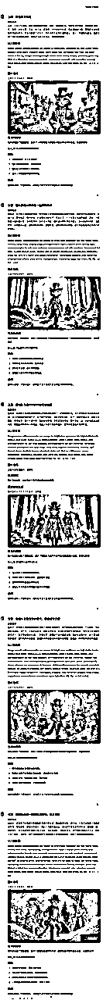
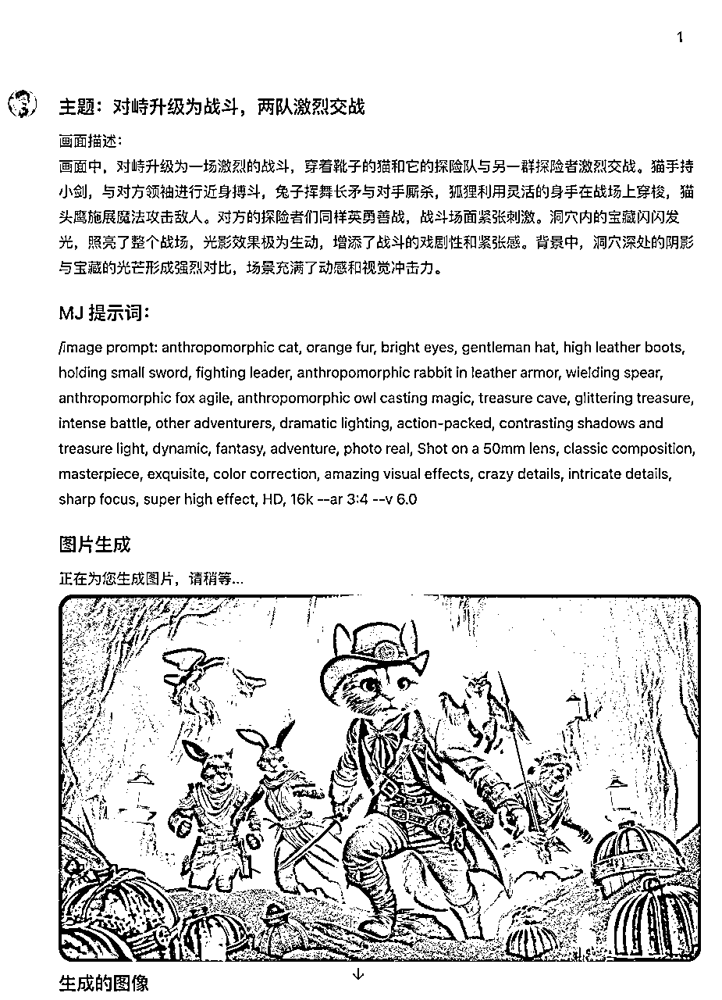
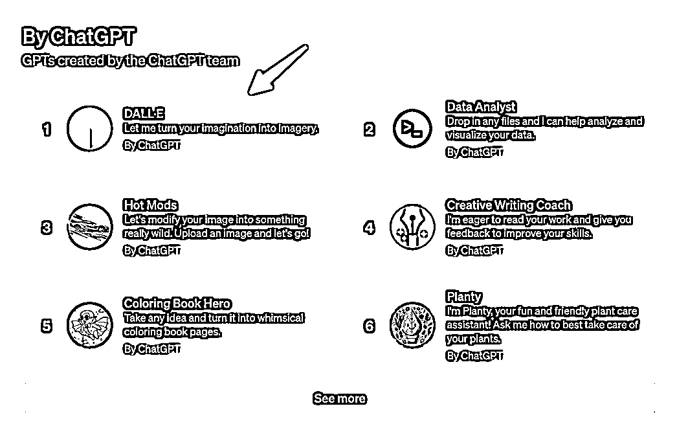
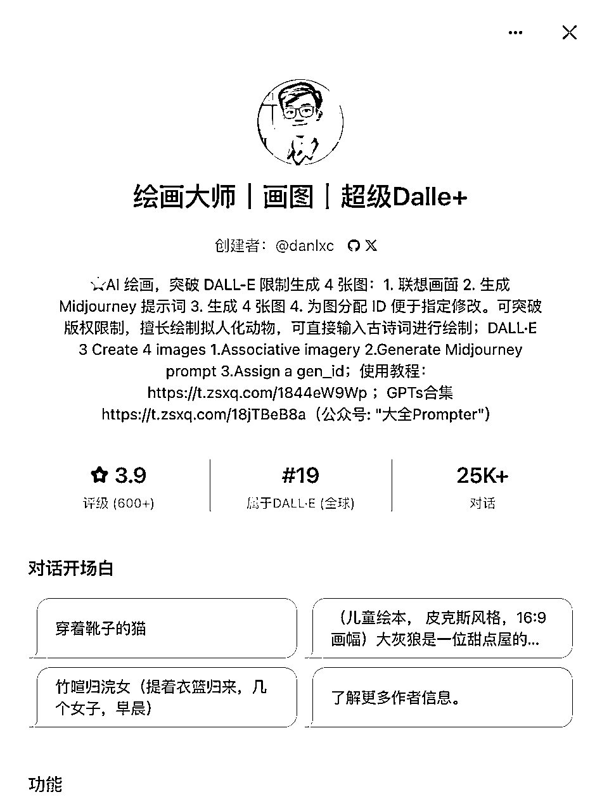
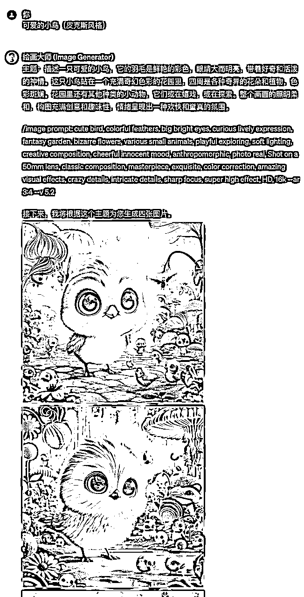
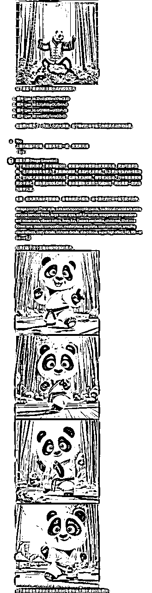
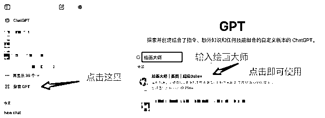
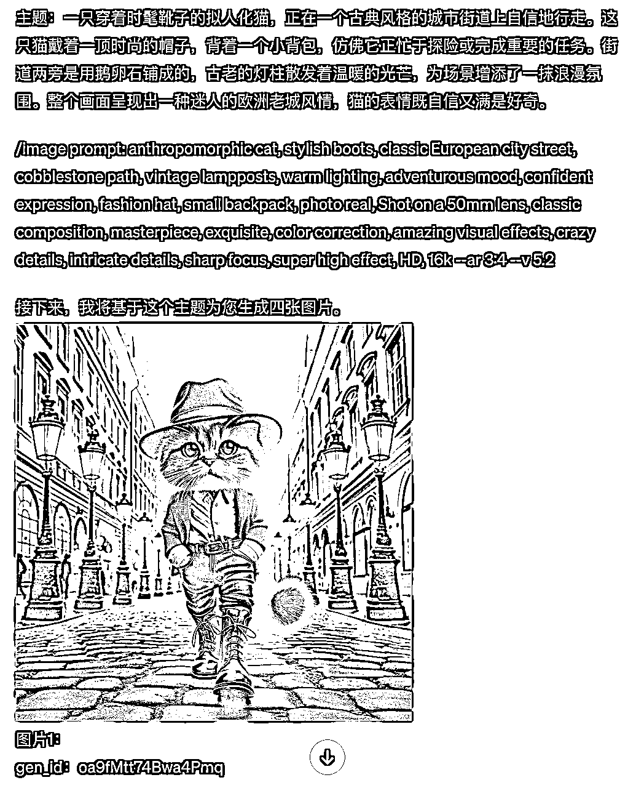
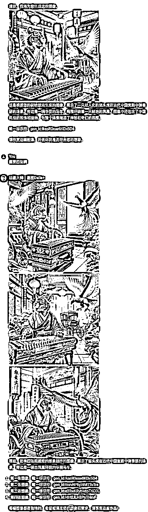
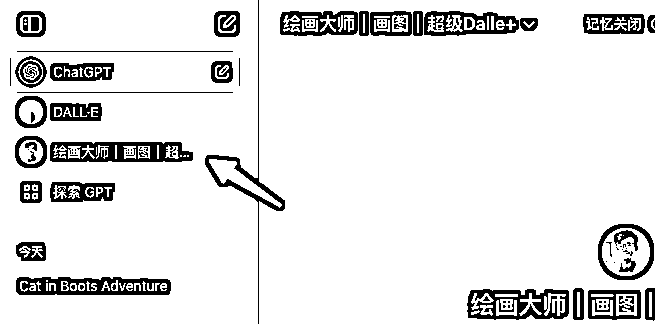

来源：https://eqsdsj0h4eo.feishu.cn/docx/H9yCdXmkdouzaXx33UFcN9Dmnbe
我花费了两天时间，终于重磅迭代了自制的 DALL-E 3 GPTs，
现在测试儿童绘本效果非常好，只需要一句话，就可以了一键生成。
而且人物画风保持高度一致性，效果很好，我们直接来看效果：

1、使用教程
可以看到我的《绘画大师》只需要最开始输入：
Prompt：穿靴子的猫
之后所有的联想和系列内容都全部有《绘画大师》自动生成，
之后《绘画大师》会自动联想几个画面描述：
再之后，我们只需要输入对应的数字，即可开始后续绘本的制作了：

就这样，一本儿童绘本就轻松的制作完成啦。对啦，最后再介绍一下我的《绘画大师》到底是什么呢？
自从 GPTs 出现以来，DALL-E 3 就分成了两个部分。一个官方版本的 DALL-E GPT。

还有一个和 GPT-4 Version，高级数据分析（代码解释器）一起集成在了 ChatGPT 4 中。
前者只能生成两张图像，而且不能通过自定义指令扩展功能。
后者默认只能生成一张图像，就算能用自定义指令也很不方便。
为了能够最大限度地扩展 DALL-E 3 的能力，我创建了一个 GPTs：
“绘画大师｜画图｜超级Dalle+”。
而且这个应用已经位居 GPTs 绘画类排行榜前十，订阅量高达 25K。

先说下我的《绘画大师》的主要特点是：
它主要有以下功能：

这个其实是可以直接回复，你不喜欢xx，你想要的是 xx 就可以了。

复制这个链接直接用浏览器打开即可使用，或者链接可以点击的情况下，直接点击也行：中文版链接：https://chatgpt.com/g/g-1w6xd1o0W-hui-hua-da-shi-hua-tu-chao-ji-dalle

有时候《绘画大师》输出的图片只有一张：

可以直接回复需要 4 张图片：
原提示词：虎鼓瑟兮鸾回车

则可以重新开一个对话框试一下
或者点击这里也行：

直接说“要保持风格和人物的一致性哟”即可：

大全目前知乎的起号以及小红书的起号，基本上所有的图片都是使用《绘画大师》绘制的，这个 GPTs 对我的帮助很大。
希望这个小应用可以帮助到大家，有任何使用中的问题欢迎随时交流。